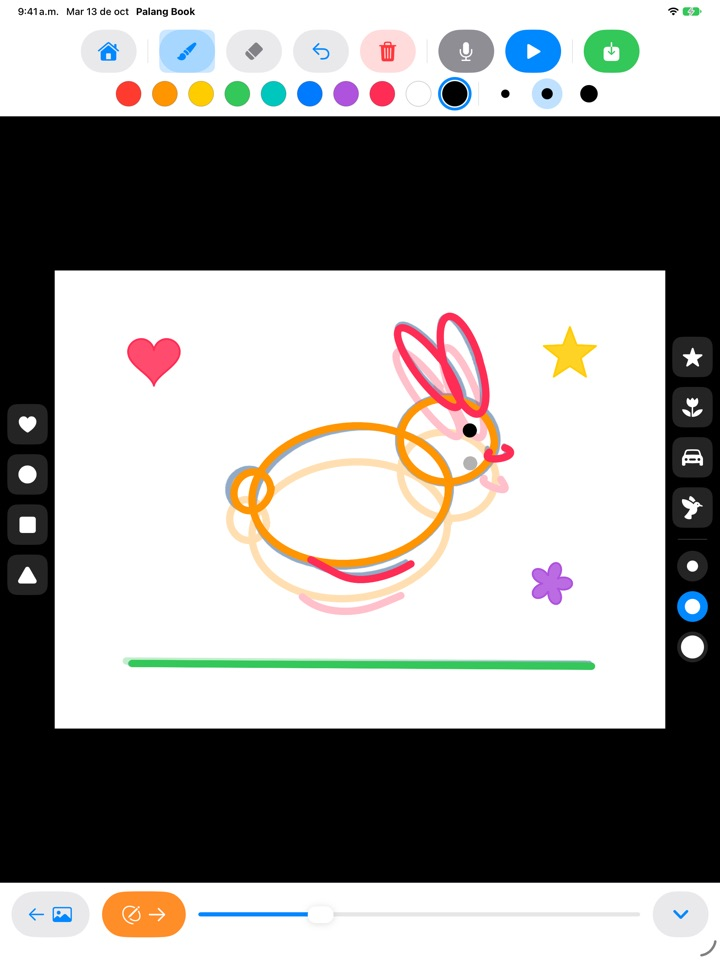
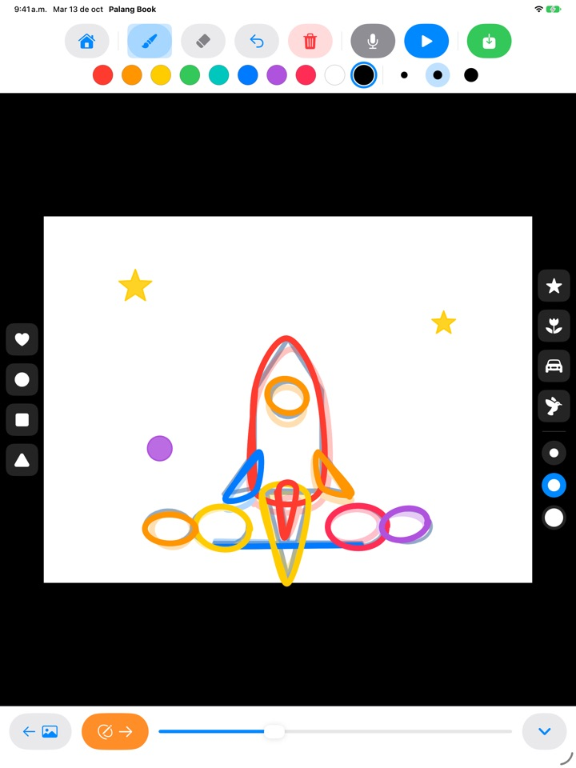
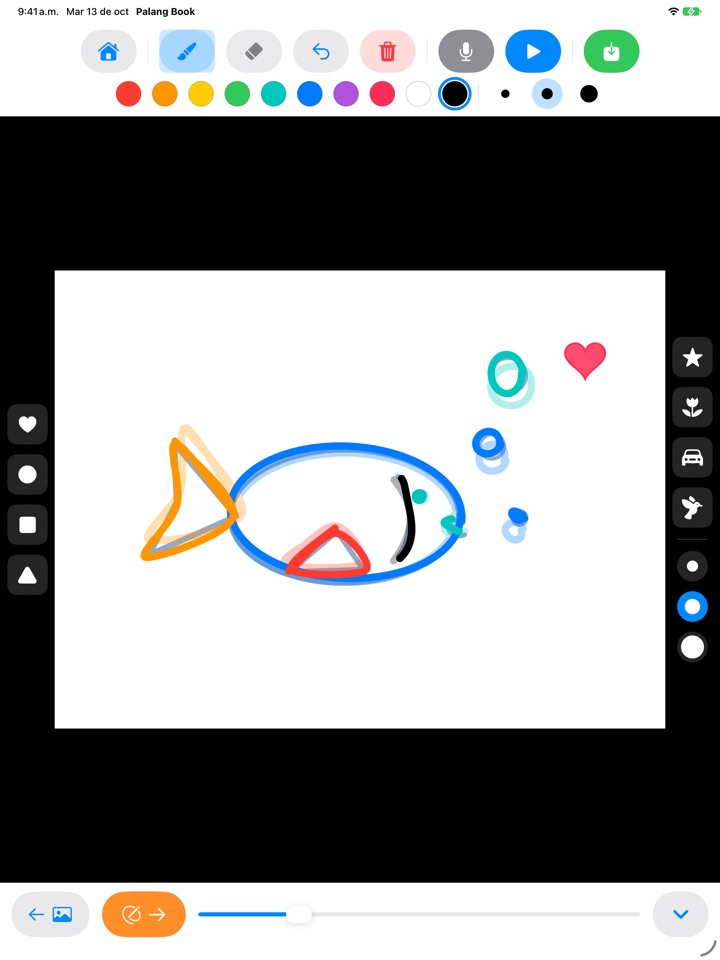
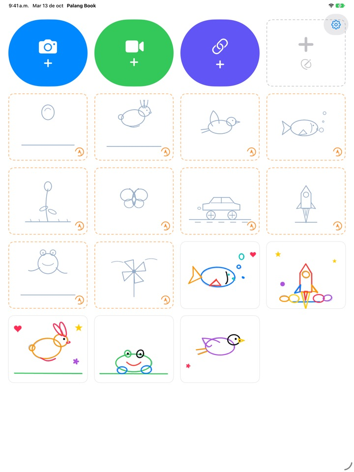

Calca las líneas.
¡Y míralas moverse!
Tu peque calca una guía clarita, una hoja a la vez. Al tocar reproducir, la guía desaparece y solo se mueven sus propios trazos. Todos los botones son dibujos, así que puede hacerlo solo aunque todavía no sepa leer.
Solo para iPad. Tres sets para calcar son gratis.

Dibuja unas hojas
Dibuja algo y toca la flecha naranja para pasar a la siguiente hoja. La hoja anterior se ve tenue por debajo. Después de dos o tres hojas, toca el botón azul de reproducir.
¿No es una pena que un dibujo tan bonito se quede quieto?
Animar significa dibujar casi lo mismo muchas veces con pequeños cambios, y a solas tu peque no sabe ni por dónde empezar. Palang Book pone una guía clarita que ya trae el movimiento, así que solo hay que seguir la línea. En cuanto toca reproducir, su dibujo se mueve.
Sigue la línea y listo: una animación
Una pelota que rebota, un conejo que salta, un pájaro que vuela, un pez que nada, una flor que se abre, una mariposa, un carro de carreras, un cohete que despega, una rana y un rehilete. Cada set trae unas 20 hojas de guía.
La hoja anterior se ve tenue por debajo para que sea fácil seguir, y al reproducir la guía desaparece y solo se mueve el dibujo de tu peque.

Sellos y diez colores
Decora con sellos de corazón, círculo, cuadrado, triángulo, estrella, flor, carro y pájaro. Hay tres tamaños de sello y tres grosores de pincel, con diez colores para elegir.
Con el borrador y deshacer, los errores se corrigen en un momento. Se dibuja con el dedo o con Apple Pencil.

Sobre tus propios videos o en hojas en blanco
Abre un video que grabaste o uno de la app Fotos y calca encima. Si ocultas el fondo, solo se reproducen las escenas que se dibujaron, una tras otra, sobre papel blanco. También hay un libro animado en blanco, sin guía.
Toca el micrófono para grabar la voz de tu peque junto con la animación, y guarda la obra terminada como video en Fotos para compartirla con la familia.

Empezar es así de fácil
- 1
Toca una tarjeta de guía
Las tarjetas con borde naranja punteado en la pantalla de inicio son para calcar.
- 2
Dibuja y pasa la hoja
La flecha naranja te lleva a la siguiente hoja.
- 3
Toca reproducir
Toca el botón azul de reproducir y el dibujo se mueve.
Para qué sirve cada botón
- Tarjeta naranja punteada
- Empezar un set para calcar
- Tarjeta gris punteada
- Libro animado en blanco
- Cámara azul
- Dibujar sobre un video que grabes
- Video verde
- Abrir un video de Fotos
- Enlace índigo
- Pegar el enlace de un archivo de video
- Flecha naranja
- Hoja siguiente
- Reproducir azul
- Reproducir la animación, tocar otra vez para detener
- Flecha curva
- Deshacer la última línea
- Bote de basura rojo
- Borrar toda la hoja (deshacer la recupera)
- Micrófono
- Grabar la voz mientras la animación se repite
- Ícono de video
- Ocultar el fondo del video (con rayas rosas, solo se ven los dibujos)
- Guardar verde
- Guardar en Fotos como video
Para borrar una obra, mantén presionada su tarjeta en la pantalla de inicio. Se borran también sus dibujos, la grabación y el video importado.
Mucho para probar gratis. El Acceso de por vida, si te encanta.
Gratis
- 3 sets para calcar (pelota, conejo y flor)
- Guarda 3 obras
- Abre 1 video
- Libros animados en blanco de hasta 10 hojas
- Grabación de voz de hasta 15 segundos
- Sellos, colores, pinceles y guardar en Fotos
Acceso de por vida
- Todos los sets para calcar, incluidos los que vengan
- Obras, hojas, videos y tiempo de grabación sin límite
- Sin la tarjeta de Palang Book al final de los videos
Un solo pago, no una suscripción. Funciona con Compartir en familia en todos los iPad de la casa.
Los videos guardados gratis terminan con una breve tarjeta de Palang Book. Si ya usabas Palang Book antes de que existiera el Acceso de por vida, todo sigue desbloqueado para ti.
Preguntas frecuentes
¿Cómo funcionan las guías?
Las líneas celeste clarito son la guía. Tu peque las calca y, al tocar reproducir, la guía desaparece y solo se mueven sus trazos. Al terminar unas 20 hojas, la animación está lista.
Quiero reproducir y guardar solo el dibujo, sin el video.
En una obra con video, toca el ícono de video de la barra de arriba hasta que se ponga rosa con rayas. Así, al reproducir y al guardar, solo se ve el dibujo sobre fondo blanco. Solo se reproducen las escenas dibujadas, así que unos pocos dibujos sobre un video largo forman una animación cortita.
¿Dónde se guarda el video terminado?
Toca el botón verde de guardar, en el extremo derecho de la barra, y se guarda un video mp4 en Fotos. La primera vez, permite el acceso a tus fotos.
¿Cómo agrego una voz?
Toca el botón del micrófono para grabar mientras la animación se repite, y toca detener para terminar. Si grabas de nuevo, se reemplaza la grabación anterior. Al guardar, la voz queda incluida en el video.
No se abre el enlace de un video.
Revisa tu conexión a internet y que la dirección lleve directo a un archivo de video (que termine en .mp4 o algo parecido). Los enlaces a páginas de sitios para compartir videos no se pueden abrir. Por respeto a los derechos de autor, usa videos que grabaste tú o que sean de uso libre.
La palma de la mano deja rayas sin querer.
La flecha curva borra la última línea, y el bote de basura rojo borra toda la hoja (deshacer la recupera). Si te pasa seguido, escríbenos y te ayudamos.
¿Por qué aparece una pregunta de matemáticas antes de la compra?
Para que tu peque no llegue solo a la pantalla de compra. Cuando toca algo bloqueado, aparece un candado grande con el aviso «Muéstraselo a un adulto», y la pantalla de compra solo se abre cuando un adulto responde una multiplicación.
¿Cómo restauro mi compra?
Toca el engranaje en la esquina superior derecha de la pantalla de inicio, elige Acceso de por vida, responde la pregunta para adultos y toca Restaurar compras. Debes haber iniciado sesión con la misma Cuenta de Apple con la que compraste.
¿Cómo envío comentarios desde la app?
Toca el engranaje en la pantalla de inicio y elige Enviar comentarios. Puedes adjuntar una captura de pantalla y dejar tu nombre y correo si quieres respuesta. Te pedimos que los comentarios los envíe un adulto.
¿Recopilan información sobre mi peque?
No. Palang Book no recopila ningún dato personal, y los dibujos y grabaciones se quedan en tu iPad. Consulta la Política de privacidad para más detalles.
¿Dudas o algún problema? Escríbenos a mizzking75@gmail.com. Normalmente respondemos en 2 o 3 días.